VividCreator App
Build your own app. Your creativity, your automation.
Describe what you want in chat — VividCreator App writes the code and shows you the running app live. Iterate until it's right, then deploy it anywhere. All from your own infrastructure.
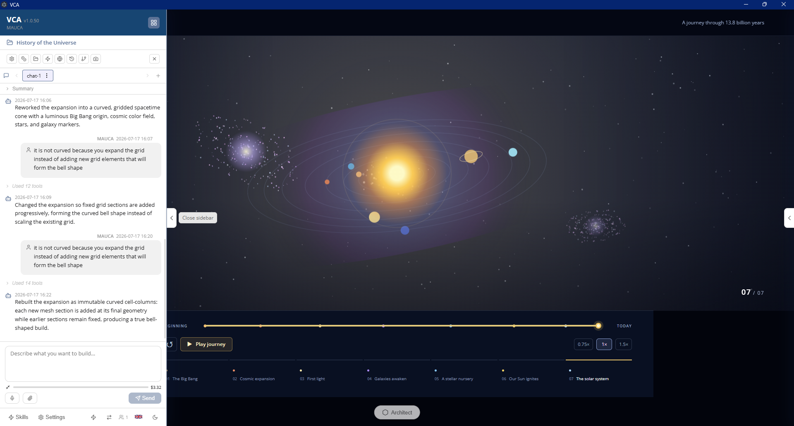
From idea to app in three steps
Describe it
Tell the agent what to build, in plain language. It scaffolds a complete, real codebase — full-stack or pure client-side.
Watch it run
A live preview shows the running app the moment code is written. Ask for changes and the agent iterates with you.
Ship it
Package a desktop app, push a git release, or export a single HTML file — every project is yours to download and deploy.
From a prompt to a polished app
An interactive journey through 13.8 billion years — described in chat, built by the agent, running full-screen in VividCreator App.
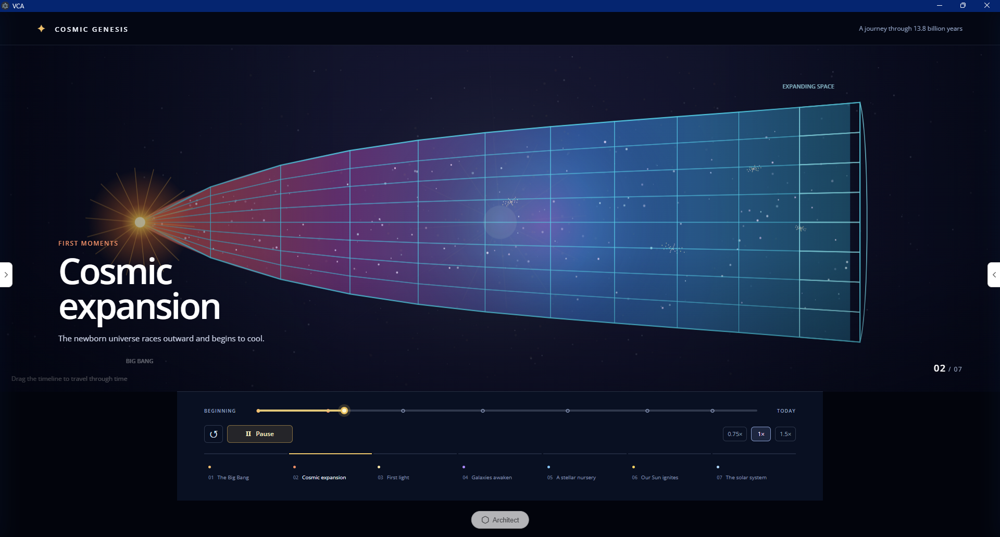
Every app is a project
Organize apps into folders, filter, reopen, and pick up where you left off. Each project is a complete codebase you can preview, download as a zip, and deploy — with its cost visible at a glance.
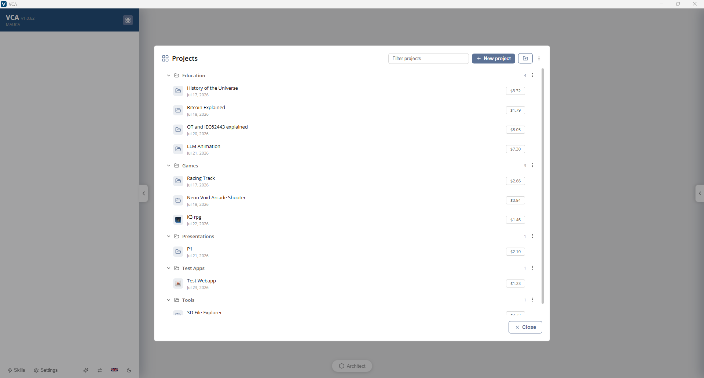
Versioned and connected from day one
Each project carries its own version, deployment target, and git remote. Create a repository on GitHub or Azure DevOps — or connect an existing one — without leaving the app.
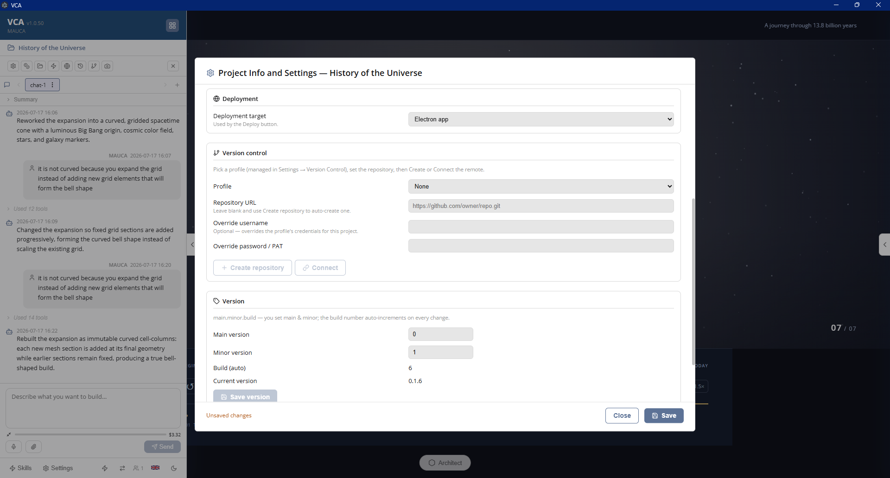
Ship it your way
Package a Windows, macOS, or Linux desktop app, tag and push a git release, or export a client-side app as a zip or one self-contained HTML file — straight from the Deploy dialog.
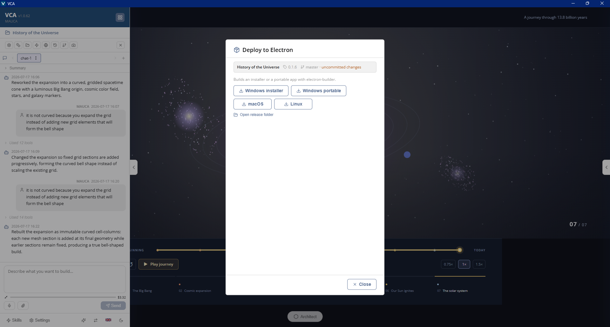
One file, whole app
Client-side apps export as a single HTML file with CSS, JavaScript, images, and fonts inlined — it opens offline, from anywhere. That covers everything from small tools to complete branded presentations.
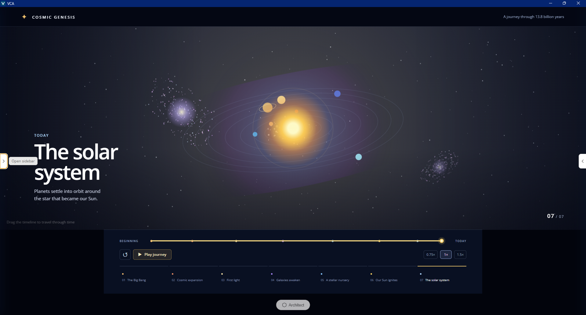
Bring your own model
Anthropic, OpenAI (API key), OpenAI Codex via supported ChatGPT plans, Azure OpenAI and AI Foundry, OpenRouter, or a local OpenAI-compatible server. Save provider setups as profiles and switch model and thinking effort in Settings.
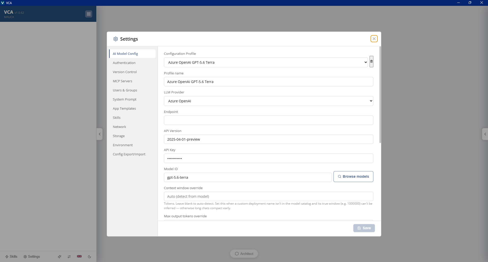
Requirements and diagrams that keep up
Track requirements per project alongside auto-maintained UML and ER diagrams — use-case, component, activity, deployment, and entity-relationship views that evolve with the code.
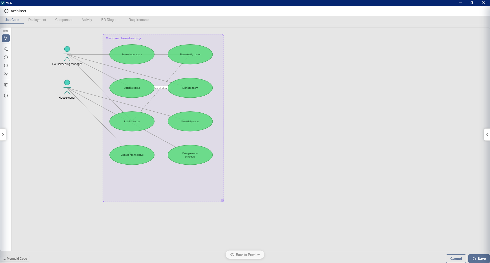
Point at what you want changed
Grab a screenshot of the running app, draw and type right on it, and attach it to the chat — or describe an edit and let the AI change the image itself.
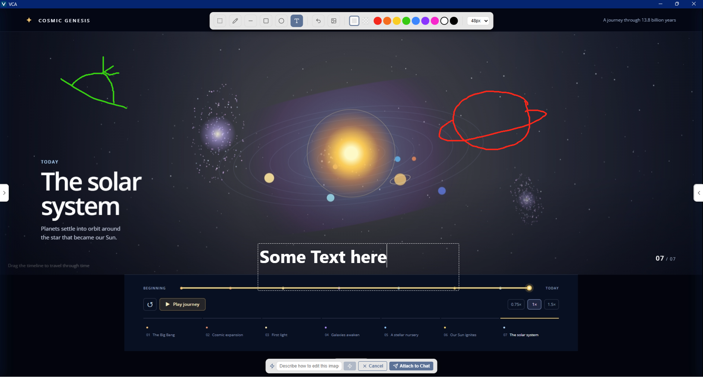
It asks before it builds
For a new app, the agent asks what the first version should focus on and who will use it — pick an option and it builds the right app from the start, visible live while it works.
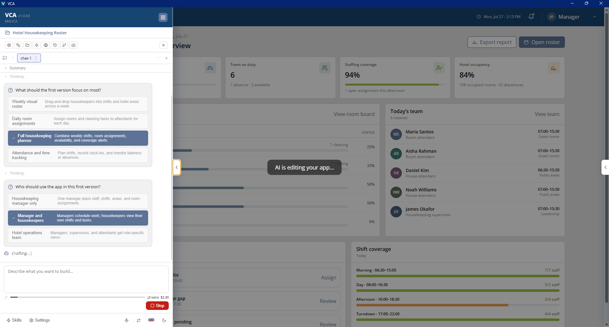
More in the box
Skills
Package your conventions and design systems as reusable skills the agent applies on demand.
MCP tools
Connect Model Context Protocol servers to extend what the agent can do, managed centrally.
Web search & fetch
Built-in tools let the agent research and pull in documentation while it works.
Images & app icons
Generate images and project icons from a prompt, or annotate a screenshot and edit it with AI.
Multi-user workspaces
Per-user projects, sharing between colleagues, and public projects for the whole team.
Enterprise sign-in
Optional Microsoft Entra ID sign-in with group-based access control and an admin console.
Cost tracking
Per-project and per-day token costs, split by model, down to input, output, and cached tokens.
Five languages
The UI ships in English, German, French, Italian, and Polish — switchable in Settings.
A closer look — a project's workflow
One project from first prompt to shipped installer.
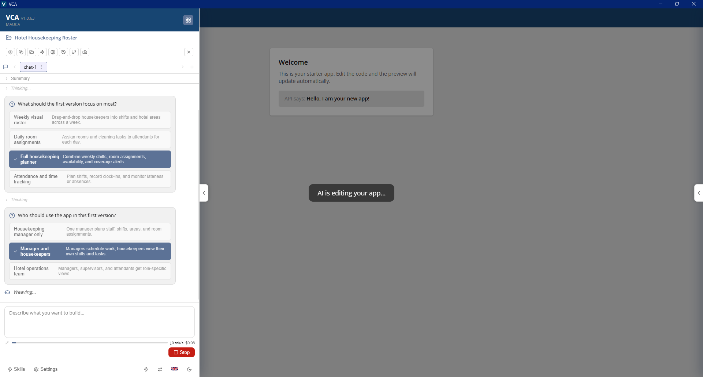
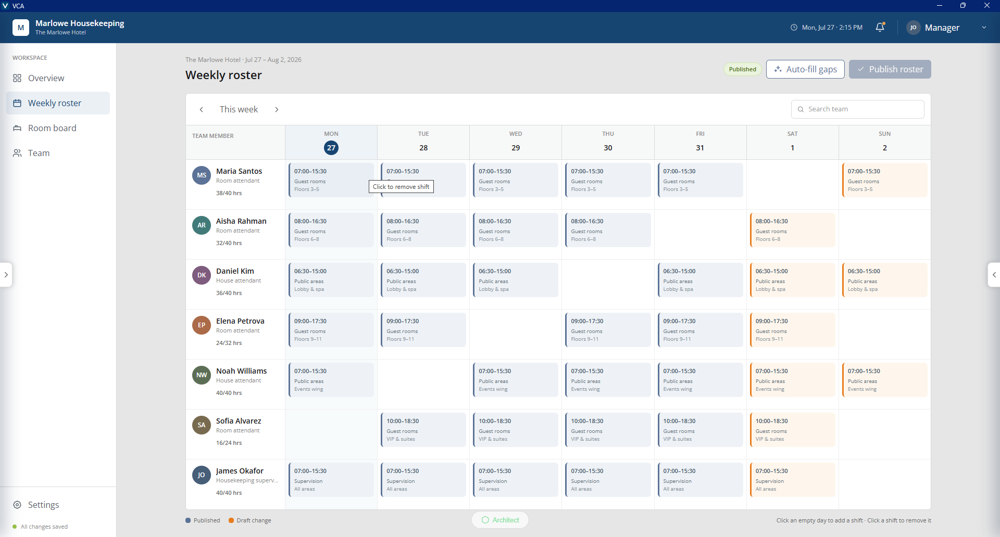
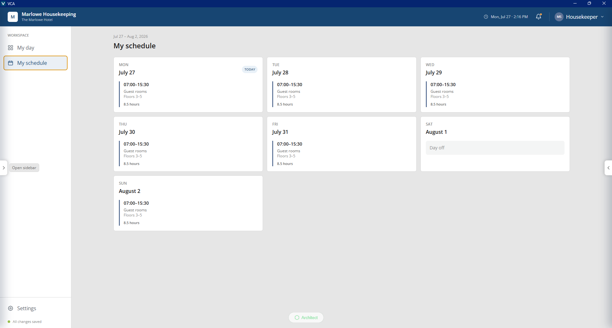
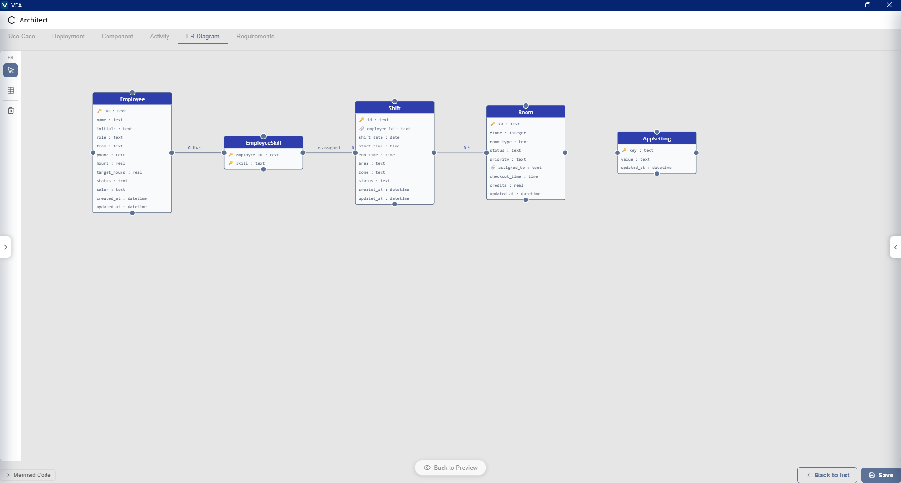
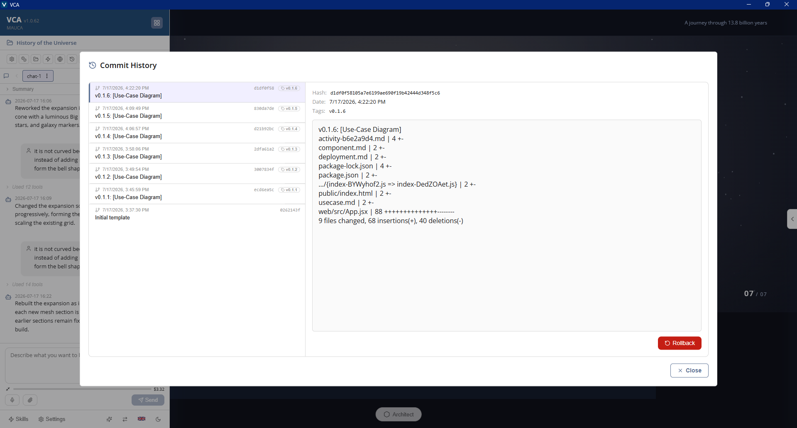
Under the hood
An open TypeScript stack you can read, run, and audit — no database server, no proprietary runtime, no lock-in.
The platform
One Express server drives the agent, projects, and previews; a React single-page app renders chat, live preview, diagrams, and admin. All state lives in plain files under a single data root — no database to operate.
The agent
The coding agent builds on the open pi coding agent and talks to whichever model you configure. Skills, MCP servers, and built-in web search and fetch extend what it can do; a separately configured image model covers app art and icons.
The apps it builds
Full-stack projects pair an Express API with a Vite-built React and Tailwind frontend; client-side projects are plain HTML, CSS, and JavaScript. Every app is self-contained source code with no CDN imports — it runs offline and is yours.
Packaging & delivery
VCA and every generated app package as desktop apps with electron-builder, bundling their own Node and Git runtime so end users install nothing. The server ships as a multi-stage Docker image; git releases push to GitHub or Azure DevOps.
Open source on GitHub
VividCreator App is MIT-licensed and developed in the open — read the source, file an issue, or send a pull request.
View on GitHubGet the app
Current VCA Version: · Windows 10/11 installer · macOS on Apple silicon and intel
Locally
Start it with one script on your own machine and build in the browser.
In Docker
One container, ready for a shared team server — with multi-user workspaces built in.
As a desktop app
A self-contained install for Windows, macOS, and Linux — nothing else to set up.